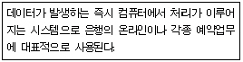
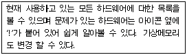
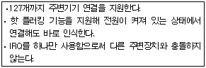
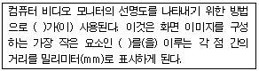
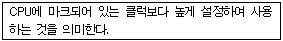
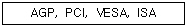
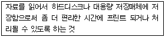

PC정비사-2급 (2004-07-18 기출문제)
1과목: PC유지보수
1. 물리적인 하나의 하드디스크를 용량에 따라 여러 개의 논리적 하드디스크 드라이브로 분할하는 것을 나타내는 것은?
- Low-level Format
- Spindle
- Hard Disk Interleave
- Partition
(정답률: 93%)

2. CMOS 셋업이나 부팅시 암호를 설정해 놓을 수 있다. 사용자가 암호를 잊어버린 경우 적절한 고장 수리 방법은?
- 데이터 버스 케이블을 마더보드에서 제거한 후 다시 연결한다.
- RAM을 마더보드에서 제거한 후 다시 장착한다.
- 컴퓨터 주변 장치를 모두 제거한 후 재부팅시킨다.
- CMOS 정보를 삭제하는 점퍼를 연결시켜 CMOS 정보를 초기화시킨다.
(정답률: 96%)
3. 현재 사용하고 있는 PC의 저장장치 용량이 부족하여 하드디스크를 추가하고자 한다. 현재의 시스템에는 EIDE방식의 하드디스크와 CD-ROM이 설치되어 있다. 다음 중 가장 적절한 확장 방법은?
- 고용량의 하드디스크를 구입하여 기존의 하드디스크를 버리고 논리적으로 2개의 하드디스크를 만든다.
- 기존의 하드디스크를 EIDE의 프라이머리 마스터에 연결하고 CD-ROM은 EIDE의 세컨더리 마스터에 연결한 후 새로운 하드디스크를 프라이머리의 슬레이브로 연결한다.
- 확장할 수 있는 방법이 없다.
- 확장을 위하여 SCSI카드를 구입하여 설치한다.
(정답률: 83%)
4. 데스크탑 컴퓨터와 노트북 컴퓨터를 연결하여 데이터를 송.수신하려 할 때 가장 적절한 연결 방법은?
- UTP케이블을 사용하여 연결한다.
- 일반 전화선을 이용하여 연결한다.
- BNC케이블을 사용하여 연결한다.
- 일반 프린터 케이블을 사용하여 연결한다.
(정답률: 82%)
5. 전자파와 VDT 증후군에 대하여 잘못 설명한 것은?
- 전자파는 컴퓨터에서만 발생한다.
- 시각 장애는 조명 불량, 화면의 반짝거림 등이 원인이다.
- 부적절한 작업 자세로 인하여 목, 어깨, 팔 등의 통증이 유발된다.
- 전자파나 정전기로 인한 두통, 피부질환 등이 유발된다.
(정답률: 79%)
6. 실수나 다른 사유로 인하여 시스템 파일 손상에 의한 부팅 장애시 나타나는 오류 메시지는?
- Out of memory
- Invalid system disk Replace the disk, and then press any key
- DISK BOOT FAILURE, INSERT SYSTEM DISK AND PRESS ENTER
- CMOS BATTERY HAS FAILED
(정답률: 55%)
7. 다음은 일반적인 PC 장애이다. 그 원인이나 대처 방법이 잘못된 것은?
- 모니터에 'No Signal'이라는 메시지가 나오면서 화면이 나타나지 않는다. - 모니터와 그래픽 카드를 연결하는 케이블 및 그래픽 카드 연결 상태 확인
- Windows에서 마우스 포인터의 움직임이 둔해졌다. - 마우스 볼을 청소하거나 교체
- 'FDD Controller Failure'이라는 메시지가 표시되면서 플로피 디스크 드라이브를 사용할 수 없다. - FDD 컨트롤러 불량 및 케이블 연결 상태 확인
- 하드디스크를 포맷하고 새로 Windows를 설치하려는데 CD-ROM이 도스 모드에서 인식을 못해 설치할 수 없다. - 점퍼를 현재와 다른 방향으로 5∼8초간 연결하였다가 다시 처음 상태로 되돌린다.
(정답률: 77%)
8. Windows XP에서 시스템에 설치된 하드웨어 구성과 소프트웨어 설정에 관한 각종 정보를 담고 있는 일종의 데이터베이스는?
- 드라이버(Driver)
- 레지스터(Register)
- 레지스트리(Registry)
- 엑세스(Access)
(정답률: 57%)
9. Windows XP 응용 프로그램 실행 중 '디스크 공간 부족'이라는 메시지가 나왔다. 이 문제를 해결하는 방안으로 잘못된 것은?
- [디스크 정리]를 통해서 자동으로 다운로드한 ActiveX 컨트롤, Java 애플릿을 삭제한다.
- 휴지통에 있는 파일을 삭제한다.
- 사용하지 않는 파일을 압축해서 공간을 확보한다.
- [디스크 조각 모음]을 실행시켜 디스크에 흩어져 있는 조각들을 모아준다.
(정답률: 57%)
10. 다음 중 고해상도 화면에서 이중으로 잔상이 나오거나 화면이 어른거리는 현상을 방지하기 위한 가장 부적절한 방법은?
- 일반 모니터 케이블을 새것으로 교체한다.
- 비디오 메모리를 업그레이드한다.
- 디가우싱(Degaussing) 버튼을 눌러 보정한다.
- 상하 핀 쿠션을 보정해 준다.
(정답률: 37%)
11. BIOS setup에서 조작할 수 없는 기능은?
- 각종 설정값의 초기화
- 각종 Cache의 Enabled/Disabled
- HDD partitioning
- Power Management
(정답률: 76%)
12. PC 사용 중 시스템이나 메모리에 문제가 발생할 때 일어나는 현상으로 잘못된 것은?
- 시스템 속도 저하
- 시스템 정지
- 시스템의 모니터가 꺼짐
- 시스템 오동작
(정답률: 88%)
13. 현재 펜티엄Ⅲ PC를 갖고 있는 고객이 펜티엄4 PC로 업그레이드 하면서 기존의 주변장치 및 설치된 Windows를 그대로 사용하였다. 사용 중 다운이 되거나 부팅하는데 이상한 현상들이 자주 일어나기 시작했는데, 이 문제를 해결하기 위한 가장 적절한 방법은?
- 주변장치들을 모두 없애고 사용해본다.
- Windows를 재설치하여 모든 세팅을 다시 정돈한다.
- 하드디스크를 로우레벨 포맷한다.
- 주변장치들도 새로 구입하여 사용하기를 권한다.
(정답률: 60%)
14. 컴퓨터 시스템 내부에서 가장 먼저 자체 검사를 하는 것은?
- HDD
- CD-ROM
- RAM
- FDD
(정답률: 67%)
15. 다음 설명 중에서 PnP기능으로 옳은 것은?
- 새로운 장치를 설정한 후 수동적으로 Setting만 시켜주면 사용자가 쉽게 사용할 수 있도록 한다.
- Windows에서 여러 개의 작업을 동시에 수행할 수 있다.
- 기존의 도스 시스템 보다 수행속도를 월등히 향상 시키는 Windows의 프로그램 수행 방식이다.
- 새로운 장치를 설치하면 자동적으로 감지하여 사용자가 쉽게 설치할 수 있도록 한다.
(정답률: 80%)
2과목: PC운영체제
16. Windows XP에서 BMP 형식의 그림을 수정하고자 할 때 적당한 프로그램은?
- 워드패드
- 그림판
- 메모장
- 클립보드
(정답률: 91%)
17. GUI 방식에 대해 올바르게 정의한 것은?
- GUI는 Graphic Use Internet의 약자이다.
- 입/출력 방식이 그래픽 인터페이스이다.
- 프로그래머에게 가장 적합한 메뉴 환경을 제공한다.
- 사용자 중심적 도스쉘 인터페이스를 제공한다.
(정답률: 62%)
18. Windows XP와 Windows 98SE를 듀얼 부팅 설정시, Windows XP를 활성 파티션이 아닌 다른 파티션에 설치를 할때, 부팅 시 필요한 파일들을 활성 파티션으로 복사를 하는데, 이 파티션은?
- 시스템 파티션
- 부트 파티션
- 듀얼 부팅 파티션
- 선택 부트 파티션
(정답률: 50%)
19. NTFS(New Technology File System)에 관한 설명이 잘못된 것은?
- 용량이 큰 하드디스크 분할 영역에 있는 파일들을 매우 효과적으로 관리한다.
- NT, DOS, Windows XP, OS/2가 모두 NTFS 볼륨을 사용할 수 있다.
- 254 문자까지의 긴 파일 이름을 지원한다.
- 파일이나 디렉토리에 접근 로그를 유지할 수 있다.
(정답률: 64%)
20. 제어판에서 제공되지 않는 아이콘은?
- 마우스
- 사운드 및 오디오 장치
- CD-ROM
- 시스템
(정답률: 84%)
21. 인터넷을 이용하여 기업, 연구소등에서 조직 내부의 모든 업무를 인터넷 기술로 처리하기 위하여 사용되는 새로운 개념의 네트워크는?
- EXTRANET
- INTRANET
- PACKET NET
- DEDICATED NET
(정답률: 77%)
22. 시작메뉴를 변경하고자 할 경우 레지스트리를 편집하지 않고 정책 편집기를 이용하여 편집할 수 있는데, 다음 중 그룹정책기를 실행하는 명령어는?
- gpedit.msc
- eventvwr.msc
- lusrmgr.msc
- dfrg.msc
(정답률: 82%)
23. 보조프로그램의 시스템 도구를 통해 할 수 있는 일은?
- 네트워크 연결
- 한글97 실행
- 디스크 정리
- 원격 데스크톱 연결
(정답률: 75%)
24. 운영체제는 처리 방식에 따라 여러 과정으로 발전했다. 보기의 설명으로 적절한 것은?

- 실시간 시스템(Real Time Processing System)
- 일괄처리방식(Batch Processing System)
- 시분할 시스템(Time Sharing System)
- 다중프로그래밍시스템(Multi Programming System)
(정답률: 90%)
25. 휴지통에 대한 설명 중 바른 것은?
- 휴지통 비우기를 실행한 후에도 파일을 다시 복구할 수 있는 기능이 휴지통의 파일메뉴에 있다.
- 삭제된 파일이 휴지통에 보관되지 않고 완전히 삭제되도록 할 수도 있다.
- 플로피 디스크에 있는 파일이나 네트워크상의 파일도 삭제되면 휴지통에 보관되어진다.
- 도스에서 삭제작업을 실행하였을 경우에도 휴지통에서 복구가 가능하다.
(정답률: 65%)
26. 다음과 같은 기능을 수행하는 제어판 도구는?

- 사운드 및 오디오 장치
- 시스템
- 새 하드웨어 추가
- 내게 필요한 옵션
(정답률: 52%)
27. Windows XP에서 도움말을 사용하고자 한다. 옳은 것은?
- [시작] - 도움말 및 지원을 클릭한다.
- [시작] - [제어판] - 내게 필요한 옵션을 선택한다.
- [시작] - [제어판] - 시스템을 선택한다.
- [시작] - [실행]을 선택한다.
(정답률: 80%)
28. Windows XP 컴퓨터에서 시스템 자동복구 만들기(ARS)에 대한 설명이 잘못된 것은?
- 자동복구파일은 컴퓨터가 여러 요인으로 인해 부팅이 되지 않는 경우 응급 복구를 위한 디스켓 파일을 말한다.
- [시작] - [모든 프로그램] - [보조프로그램] - [시스템 도구] - [백업]메뉴를 선택하여 [백업 및 복원 마법사]를 실행한다.
- Windows XP에서 시스템 자동복구 만들기를 실행할 때 백업이 저장될 위치는 Windows XP가 설치되지 않은 다른 드라이브나 파티션을 선택해야 한다.
- [시작] - [설정] - [제어판] - [프로그램 추가/삭제] - [시동디스크]를 선택한다.
(정답률: 63%)
29. Windows XP의 인터넷 옵션에서 할 수 있는 일에 대한 설명 중 잘못된 것은?
- 브라우저를 시작할 때 표시되는 최초 웹 페이지를 지정할 수 있다.
- 컴퓨터에 저장된 임시 인터넷 파일을 삭제할 수 있다.
- 내용 관리자를 사용하여 불건전한 내용에 대한 액세스를 차단하고 웹 페이지에 색 및 글꼴이 표시되는 방법을 지정할 수 있다.
- 보안수준의 설정은 할 수 없으나 전자 메일과 인터넷 뉴스 그룹을 읽을 때 사용하는 프로그램을 지정할 수 있다.
(정답률: 75%)
30. WindowsXP에서 Windows Messenger에 대한 설명으로 잘못된 것은?
- Windows Messenger는 전용 문서 편집기이다.
- Windows Messenger는 Windows XP와 함께 제공되는 제품이다.
- Windows Messenger는 실시간 음성, 화상 및 텍스트, 채팅, 응용프로그램 공유, 화이트보드 공유, 파일 전송 등의 기능을 제공한다.
- Windows Messenger에서는 상대방과 대화가 가능한지 확인할 수 있다.
(정답률: 69%)
3과목: PC주변기기
31. 다음 중 CPU에 대한 설명으로 잘못된 것은?
- 애슬론 XP - AMD에서 만든 CPU로서 1600+의 경우 1.6GHz의 동작속도를 가진다.
- 펜티엄 4 - 인텔에서 만든 CPU로서 처음에는 소켓423형으로 나오다 소켓 478형으로 대체 되었다.
- 듀론 - 인텔의 셀러론과 같은 보급형 CPU로서 가격대비 성능에서 좋은 평가를 받고 있다.(CPU만의 가격과 성능비교)
- C3 - VIA에서 만든 CPU로서 펜티엄 3와 같은 소켓 370 메인보드에 장착할 수 있다.
(정답률: 37%)
32. CD-RW 미디어를 하드디스크처럼 사용하여 탐색기 내에서 기록과 삭제를 가능하게 하는 기록방식은?
- Multi-Session Recording
- Mixed Mode Recording
- Hybrid Mode Recording
- Packet Writing
(정답률: 28%)
33. 동급 해상도임에도 불구하고 레이저 프린터에 비해 잉크젯 프린터 출력물이 덜 선명한 이유는?
- 출력 속도가 느리기 때문에
- 결과물이 습기나 물에 약하기 때문에
- 잉크 방울이 종이에 닿는 순간 번짐 현상이 일어나기 때문에
- 잉크를 녹이는 온도가 약해서
(정답률: 85%)
34. 다음은 무엇을 설명한 것인가?

- USB 방식의 장비
- 시리얼/패러럴 포트 장비
- SCSI 방식의 장치
- EIDE 방식의 드라이브
(정답률: 67%)
35. 물체에 비추어 반사된 빛을 전기 신호로 바꾸어 컴퓨터가 인식할 수 있는 디지털 신호로 바꾸는 장치는?
- 프린터
- 스캐너
- 모니터
- VGA
(정답률: 80%)
36. 펜티엄4는 처음 출시되었을 때 400MHz의 FSB를 사용하였다. 그렇다면 실질적인 CPU의 실 클럭수는 얼마인가?
- 100MHz
- 133MHz
- 200MHz
- 400MHz
(정답률: 39%)
37. 다음 괄호 안에 들어갈 용어가 옳게 짝지어진 것은?

- 해상도 (Resolution) - 도트 피치(Dot Pitch)
- 도트 피치(Dot Pitch) - 픽셀 (Pixel)
- 픽셀 (Pixel) - 도트 피치(Dot Pitch)
- 해상도 (Resolution) - 픽셀(Pixel)
(정답률: 40%)
38. 하드웨어에 장착된 칩(Chip) 속에 프로그램을 내장하여 작동하는 장치를 가리키는 것은?
- Software
- SCSI
- RAM
- Firmware
(정답률: 74%)
39. 다음은 무엇에 대한 설명인가?

- 가상메모리
- 파이프라인
- 슈퍼스칼라
- 오버클러킹
(정답률: 89%)
40. 다음 나열되어 있는 장치들의 대역폭으로 맞게 짝지어진 것은?

- 64, 32, 32, 16 bit
- 32, 32, 32, 16 bit
- 64, 32, 16, 8 bit
- 32, 32, 16, 16 bit
(정답률: 34%)
41. 다음 중 시스템 메모리로 사용하기에 부적절한 것은?
- FPM DRAM
- SDRAM
- SRAM
- RDRAM
(정답률: 55%)
42. 터미네이션 설정이 필요 없는 장치는?
- 스카시 호스트 어댑터
- 동축 케이블을 이용한 네트워크 구성
- 스카시를 이용한 스캐너
- UTP 케이블을 이용한 네트워크 구성
(정답률: 52%)
43. 다음에서 설명하고 있는 것은?

- SWAP
- SPOOL
- DMA
- OVERPLAY
(정답률: 78%)
44. 포토샵 같은 프로그램에서 스캐너의 이미지를 입력하기 위해 사용하는 드라이버는?
- TWAIN
- TABLE
- Firm Ware
- Burn Proof
(정답률: 46%)
45. 최근의 개인용 컴퓨터에는 여러 종류의 저장 장치가 사용된다. 다음 저장 장치 중에서 자성 물질을 이용하지 않는 종류는?
- 플로피 디스켓
- 하드디스크
- CD-ROM
- 테이프
(정답률: 52%)
4과목: PC네트워크
46. 전자 메일의 사서함에 도착된 메일을 자신의 컴퓨터로 전송 받기 위해 사용되는 통신 프로토콜은?
- SMTP
- FTP
- POP3
- PPP
(정답률: 61%)
47. 컴퓨터에 할당된 IP 주소를 이용하여 해당 컴퓨터가 속한 네트워크 식별자를 알아내기 위해 사용하는 것으로, 클래스 기반의 방법보다 더 많은 식별자를 이용할 수 있도록 하기 위해 사용하는 것은?
- 게이트웨이
- 서브넷 마스크
- DNS 서버
- WINS 서버
(정답률: 40%)
48. 데이터 링크 확립 절차에서 제어국이 종속국을 1국씩 선택하여 송신유무를 확인하는 방식은?
- 회선 쟁탈 방식
- 폴링 방식
- 셀렉션 방식
- 대화 모드 방식
(정답률: 36%)
49. 무선 LAN에서 사용되는 데이터 전송 기술이 아닌 것은?
- 적외선(Infrared)
- Wideband
- Narrow-Band
- Spread-Spectrum
(정답률: 37%)
50. 어떤 컴퓨터든 통신 세션을 시작할 수 있는 통신 모델을 지칭하며 네트워크에 연결되어 있는 모든 컴퓨터들이 서로 대등한 입장에서 데이터나 주변장치 등을 공유할 수 있다는 의미를 담고 있는 모델은?
- 클라이언트/서버 모델
- 마스터/슬레이브 모델
- Peer to Peer 모델
- N2N 모델
(정답률: 62%)